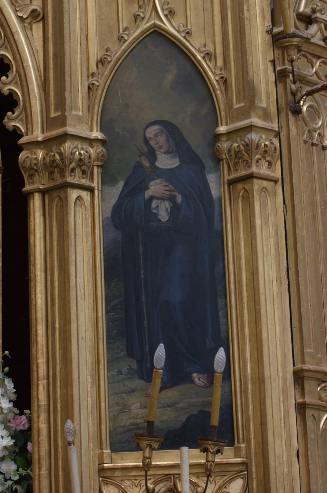

Santa Clara d’Assís (1194-1253) va ser la fundadora, juntament amb sant Francesc d’Assís, de l’Orde de les Germanes Pobres, conegudes com a clarisses. Als 18 anys, després d’escoltar predicar sant Francesc, abandonà la seva família noble per consagrar-se a la vida religiosa. Fou la primera dona seguidora del sant i fundà amb ell l’orde de les Clarisses, una comunitat de monges pobres dedicada al treball, l’oració i l’ajuda als necessitats. Redactà la regla de l’orde, convertint-se així en la primera dona autora d’una regla monàstica. La segona meitat de la seva vida patí una malaltia crònica i dolorosa que suportà sense queixar-se ni abandonar les seves tasques. L’any 1958 va ser nomenada patrona de la televisió, arran d’una tradició segons la qual, una nit de Nadal en què la seva malaltia no li permeté assistir a missa, veié i sentí miraculosament la celebració projectada a la paret de la seva habitació.
En aquesta pintura d’Agustí Buades i Muntaner (s. XIX), santa Clara apareix vestida amb l’hàbit de les clarisses: túnica fosca, toca blanca, vel negre i cordó amb nusos a la cintura. La santa sosté una custòdia, el seu atribut iconogràfic més característic. Segons la tradició, quan uns serraïns que invadiren Pisa amenaçaren el convent on vivia, santa Clara sortí a enfrontar-s’hi portant una custòdia amb el Santíssim Sagrament, de la qual emanà una llum fortíssima que va fer fugir espantats els atacants. A diferència de moltes altres representacions, on la santa sosté la custòdia de manera solemne i triomfal, aquí la manté molt a prop del pit i embolicada amb una tela blanca, en una actitud íntima i recollida. Aquest detall reforça la profunda devoció eucarística de la santa i connecta amb la sensibilitat devocional de finals del segle XIX.